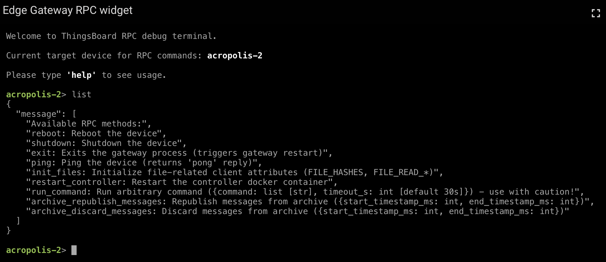

Remote Procedure Calls¶
The Edge Gateway supports Remote Procedure Calls (RPC) via ThingsBoard’s built-in RPC mechanism. RPCs allow external applications, automation scripts, or ThingsBoard dashboards to invoke predefined commands on the Edge Gateway controller and receive immediate feedback.
This mechanism is primarily intended for operational control, diagnostics, and maintenance tasks that must be executed on-demand without direct access to the device.
RPCs follow a controller-executed model. All RPC commands are handled by the Edge Gateway controller, while the Edge Gateway runtime acts as a secure transport and execution environment. This separation ensures that operational commands can be executed without interrupting the gateway process itself, unless explicitly intended.
Overview¶
ThingsBoard provides an RPC widget that acts as an interactive console within dashboards. Using this widget, users can send RPC requests to a specific Edge Gateway device and inspect the returned responses in real time.
RPCs are executed by the Edge Gateway controller and are restricted to a predefined set of supported commands to ensure safe and controlled operation. Unsupported or unknown RPC methods are rejected and return an error response without executing any action on the device.
For a general introduction to ThingsBoard RPCs, refer to the official documentation: https://thingsboard.io/docs/user-guide/rpc/
{kind=link}
Built-in RPC Command: list¶
The Edge Gateway controller exposes a built-in RPC command named list. This command returns a human-readable list of all RPC commands currently supported by the controller, including a short description of each command and its expected parameters.
This command is useful for quickly verifying controller capabilities and for debugging RPC availability after software updates.
The output of this command reflects the currently running controller version. After controller updates, the list of available RPC commands may change accordingly.
Example response:
{
"message": [
"Available RPC methods:",
"reboot: Reboot the device",
"shutdown: Shutdown the device",
"exit: Exits the gateway process (triggers gateway restart)",
"ping: Ping the device (returns 'pong' reply)",
"init_files: Initialize file-related client attributes (FILE_HASHES, FILE_READ_*)",
"restart_controller: Restart the controller docker container",
"run_command: Run arbitrary command ({command: list [str], timeout_s: int [default 30s]}) - use with caution!",
"archive_republish_messages: Republish messages from archive ({start_timestamp_ms: int, end_timestamp_ms: int})",
"archive_discard_messages: Discard messages from archive ({start_timestamp_ms: int, end_timestamp_ms: int})"
]
}
Supported RPC Commands¶
The following RPC commands are currently supported by the Edge Gateway controller. Command availability may depend on the deployed controller version.
ping¶
Performs a simple connectivity check.
- Description
Returns a static
pongresponse if the controller is reachable and responsive.- Parameters
None
- Typical use cases
Verify basic connectivity
Confirm controller responsiveness
reboot¶
Reboots the Edge Gateway host system.
- Description
Performs a full system reboot of the device.
- Parameters
None
- Notes
This command interrupts all running services.
Use with care on production systems.
shutdown¶
Shuts down the Edge Gateway host system.
- Description
Powers off the device gracefully.
- Parameters
None
- Notes
Physical access is required to restart the device afterward.
exit¶
Terminates the Edge Gateway process.
- Description
Stops the gateway process, which triggers an automatic restart by Docker.
- Parameters
None
- Notes
Performs a clean restart of the gateway process
Allows to apply gateway-level configuration or software changes.
The restart is performed by the container runtime and does not reboot the host system.
restart_controller¶
Restarts the Edge Gateway controller container.
- Description
Stops and restarts the controller Docker container without affecting the gateway runtime.
This command does not restart the Edge Gateway process itself. Telemetry buffering, file synchronization, and connectivity to ThingsBoard remain active during the controller restart.
- Parameters
None
- Typical use cases
Manually apply controller configuration changes
Recover from transient controller errors
init_files¶
Initializes file-related client attributes required for remote file management.
- Description
Creates and initializes the client attributes required for the Remote File Management feature, most notably
FILE_HASHESand allFILE_READ_<file_key>attributes. This RPC allows the file management initialization process to be triggered manually. Under normal conditions, it is executed automatically after a successful device provisioning.- Parameters
None
- Typical use cases
Manually trigger file management initialization
Recover from incomplete or failed provisioning
Initialize file management on pre-configured or cloned devices
run_command¶
Executes an arbitrary command on the Edge Gateway host.
- Description
Executes a shell command on the device and returns the command output.
- Parameters
command(list of strings, required): Command and argumentstimeout_s(integer, optional): Command timeout in seconds (default: 30)
- Notes
This command is performed within the gateway runtime environment, not within the controller container.
The command is executed with the same permissions as the gateway process, which may have security implications.
Use with extreme caution, as it can lead to service interruptions or security risks if misused.
Command execution is synchronous and blocks until completion or timeout. Long-running commands may temporarily delay other RPC handling.
archive_republish_messages¶
Republishes archived telemetry messages.
- Description
Republishes previously archived telemetry messages within a specified time range. This allows locally stored messages that were lost in transmission to be reprocessed and sent to ThingsBoard.
The specified time range is inclusive and evaluated using the message timestamps stored in the local archive.
- Parameters
start_timestamp_ms(integer): Start of the time range (Unix timestamp in milliseconds)end_timestamp_ms(integer): End of the time range (Unix timestamp in milliseconds)
archive_discard_messages¶
Discards archived telemetry messages.
- Description
Permanently deletes archived telemetry messages within a specified time range. This allows to free up local storage space by removing messages that are no longer needed or have already been successfully transmitted to ThingsBoard.
The specified time range is inclusive and evaluated using the message timestamps stored in the local archive.
- Parameters
start_timestamp_ms(integer): Start of the time range (Unix timestamp in milliseconds)end_timestamp_ms(integer): End of the time range (Unix timestamp in milliseconds)
Security Considerations¶
RPC commands provide powerful control over Edge Gateway devices. It is strongly recommended to:
Restrict RPC access to trusted users and dashboards only
Avoid exposing sensitive commands such as
run_commandto non-administrative usersUse ThingsBoard role-based access control to limit operational impact
Improper use of RPC commands may lead to service interruptions or security risks.
For production deployments, it is recommended to disable or restrict destructive RPC commands entirely and rely on automated workflows where possible.